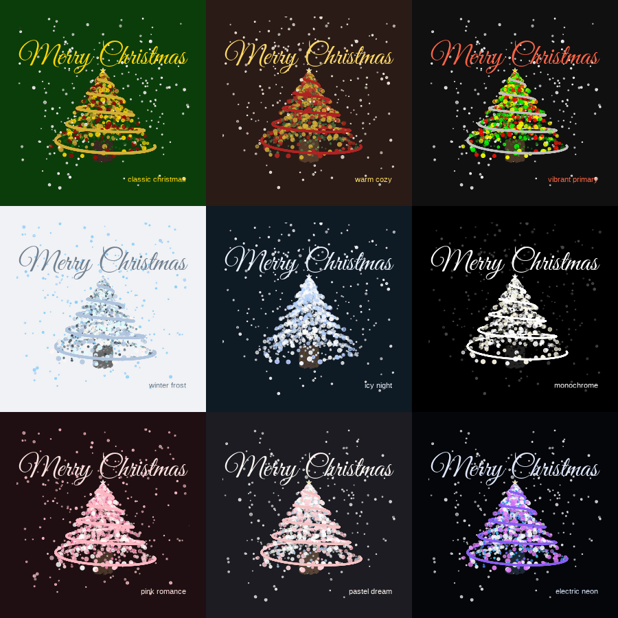

Rtoolset is a miscellaneous tool set for R programming and data analysis, providing utility functions for:
- 📊 Sample Operations: Balanced partition
- 🔬 Feature Operations: Selection and filtering
- 🔄 Data Transformation: Common transformations
- 💻 R Programming: String matching, formatting, objects
- 🔧 General Utilities: File management, package installation
- 🎮 Visualization & Fun: Interesting visualizations and games
and more to come…

Installation
You can install Rtoolset from GitHub with:
# Using pak (recommended)
install.packages("pak")
pak::pak("wbvguo/Rtoolset")
# Or using remotes
install.packages("remotes")
remotes::install_github("wbvguo/Rtoolset")Quick Start
library(Rtoolset)
# Example: Create animated Christmas trees
draw_xmas_tree_gif_panel()
Documentation
Full Documentation - Browse all functions and articles (currently under construction)
-
Vignettes - Detailed tutorials (available after installation):
browseVignettes("Rtoolset") -
For function reference, use standard R help:
?closestMatch